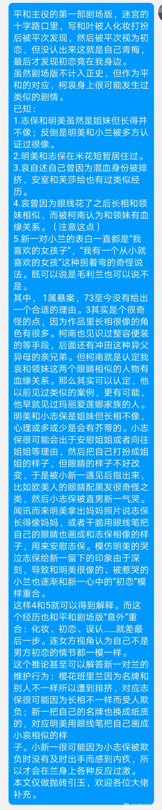

我的手机输入法抽风了，想复制的东西复制不过来，截图给大家看看。
全做抛砖引玉，欢迎大佬补充
全做抛砖引玉，欢迎大佬补充


顺便一提，个人认为如果上述猜想成立，那么麻美学姐的“初恋容易褪色”就有可能不是指毛利兰，而是被新一混淆了记忆的志保。毕竟新一还是喜欢了小兰挺久的，怎么看都不是“容易褪色”的范畴。但如果是指被新一的初恋被遗忘了，那下一话灰原哀的出场就很有几分兴师问罪的味道（）
2023-10-21 02:24 | 贴吧用户_aZZeMEb:我记得b站up说过73指明新一初恋是毛利兰，兰的初恋好像是没有说明还是什么，记不太清了
一个相当可行的解释，我以前一直觉得柯南回忆不出一个棕发碧眼的女孩难以理解。2023-10-20 09:45 | 王木木木木木🌵:四岁前不记事其实也正常
又新又好
千苗也是13年前呢
白林是认错人，白佐接吻被打断。
不过女方认为男方初恋不是自己这个，和叶认为不是自己但其实就是她，不过mll也认为不是自己（虽然园子认为就是她）…虽然肯定志保也不会觉得是自己啦
2023-10-21 00:41 | 贴吧用户_GVXKVQK:众所周知园子磕的cp都不怎么准
还真有可能，蹲一个预言家
这个理论很有可行性！用明美和毛利兰很像但是和志保不像这个切入点好有意思啊！就是有一点疑问：灰原认为自己是日本人长相（她也认为这是她在米国被80的原因），而且动画的色指定不可靠还经常变来变去，唯一可靠的只有青山，但青山在通常情况下画的彩图里角色的瞳色绝大部分都是蓝色，发色也一般只有棕黑色和不同浓度的茶色/浅金色（除了青山唯一指定银发的琴酒），相关总结和一些特例可以看weibo.com/ttarticle/p/show?id=2309404456953236553836 和 weibo.com/2211414484/IzU3e3Xww 这两条，总之就是灰原的瞳色很难确定，很奇怪青山为什么在做了灰原是亚洲人长相这样的设定后又设定灰原和长相应该是比较偏英国人的玛丽长得像，或许灰原整体长得是亚洲人的模样，但眼睛像玛丽？
漫画里新一从来没有直接说过初恋是小兰这点真的很耐人寻味，刚子肯定是故意的
蹲
会不会是小志保给自己染成黑发，褪色后才会变成茶色；小新一是看见了一绺没染好的茶色头发发现的。
咋一看还以为你要说新一喜欢明美呢

秀一和小哀都有明美兰幻视，柯南什么时候来一次
秀一和小哀都有明美兰幻视，柯南什么时候来一次